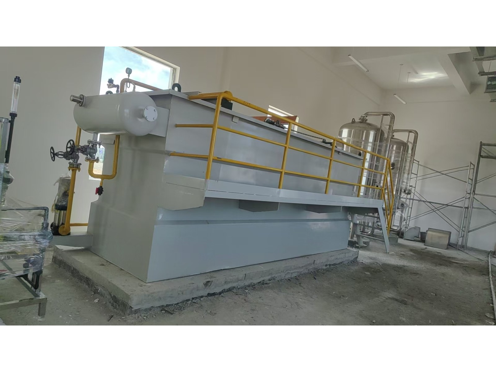

固威环保广州市固威环保科技开发有限公司
固威环保广州市固威环保科技开发有限公司待确认
设计处理水量
01 / 项目介绍
项目位于海南文昌，以下实拍展示一体化溶气式气浮机及配套装置的制造、发运与现场安装情况。


设计处理水量
完整处理工艺
固威项目服务范围
现有实拍展示气浮设备、加药装置及立式泵。设备型号、供货数量与现场最终配置：〔待确认〕。
进水水质、出水去向及处理目标：〔待确认〕。后续结合项目资料补充系统配置说明。
02 / 工艺与系统
围绕现有设备资料，展示各装置的用途；完整工艺路线及设备连接顺序：〔待确认〕。
一体化溶气式气浮机用于气浮分离。项目设计处理能力与运行参数：〔待确认〕。
加药装置配合药剂搅拌与投加。药剂类型、投加量及控制方式：〔待确认〕。
立式泵及配套管路见下方实拍。泵的具体用途、流量及扬程：〔待确认〕。
本项目的污泥收集、脱水配置及后续处置安排：〔待确认〕。
03 / 项目设备
设备名称与实拍对应展示，点击图片可放大查看。
04 / 制造与发运
05 / 设备配套
结合水量、水质、场地及既有设施，沟通污水处理站的新建、扩建与改造需求。
核对处理单元、管道接口、供电与检修空间，明确设备配置和安装条件。
根据项目需求，沟通液位控制、加药联动、设备启停及运行监测配置。
结合污水处理站的污泥性质、处理量和运行安排，沟通板框压滤机等脱水设备的配置与安装条件。
了解板框压滤机 →1. 您负责哪座污水处理厂，本次是新建、扩建还是改造。
2. 项目处理规模、现有设施及排放要求。
3. 您现在最想解决的问题是什么。
没有完整图纸或技术资料，也可以先说明已知情况。
发射区总图外线及厂外机电安装工程 · 废水处理站设备
TREATMENT PROCESS
来水收集
pH 调节
混凝絮凝
除油、除悬浮物
浮渣 → 浮渣罐收集
监测出水含油
PLC 控制柜全流程自动控制
EFFLUENT REQUIREMENTS
按项目提供的设计资料列示
B级
三级标准
RELATED PRODUCTS
CONTACT GUWEI